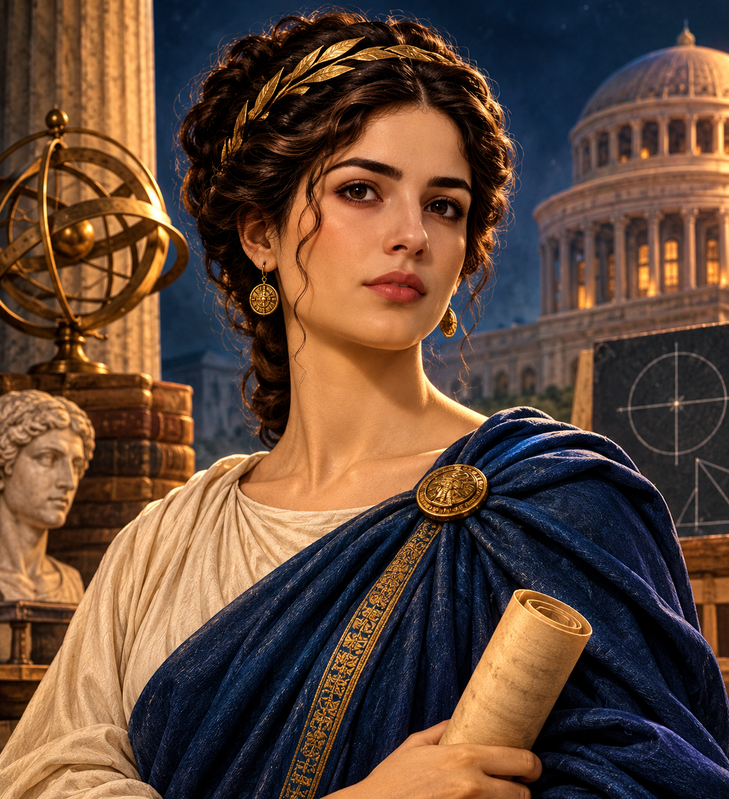
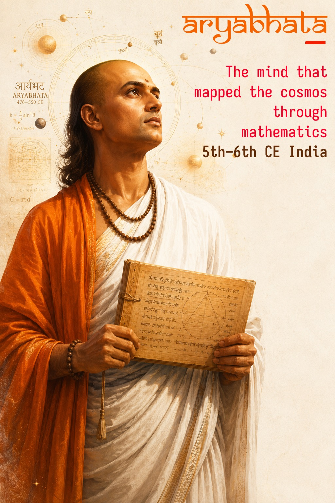

Dos protagonistas
Descubre sus contextos históricos, sus obras y sus trayectorias.
Leer biografías →Un recorrido por la vida y las ideas de Hipatia de Alejandría y Aryabhata: dos figuras que ayudaron a conservar, desarrollar y transformar el conocimiento matemático.

HipatiaAlejandría · c. 370–415
AryabhataIndia · 476–c. 550Conoce las vidas de Hipatia de Alejandría y Aryabhata, sus aportes matemáticos y la vigencia de sus ideas.
Descubre sus contextos históricos, sus obras y sus trayectorias.
Leer biografías →Repasa los contenidos con el cuestionario interactivo de ocho preguntas.
Ir al juego →